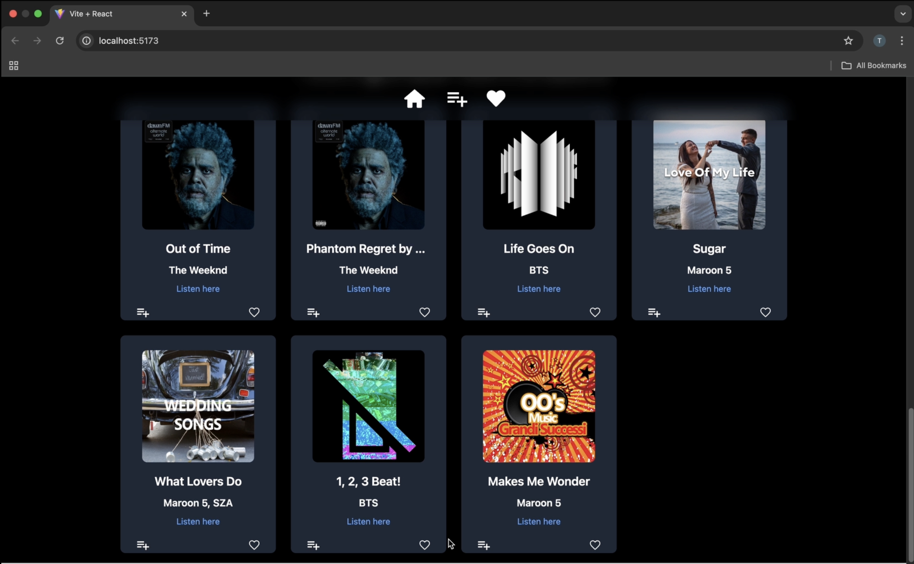

.jpeg)
.jpeg)
Abstract
This model presents a content-based multilingual song recommendation system developed using unsupervised machine learning techniques.Designed to support five languages—Hindi ,Tamil ,Korean, English ,and a miscellaneous type—the system takes a user’s input of a language and a specific song title, and identifies similar songs within that language to ensure linguistic and cultural relevance. To build the recommendation engine, we curated a dataset of 61,711 songs across the supported languages using Kaggle as our source. Audio features such as tempo, valence, energy, acousticness, and danceability were extracted and standardised. We then applied Kernel Principal Component Analysis (Kernel PCA) with an RBF kernel to reduce dimensionality while preserving non-linear feature relationships . The normalised feature set was clustered using K-Means, which produced more distinct and meaningful groupings than DBSCAN. K-Means was fine-tuned by using K-Means++ for centroid initialization and the Elbow Method by analyzing the Within-Cluster Sum of Squares (WCSS) to determine the optimal number of clusters per language, while the best epsilon values were used for DBSCAN for comparison.Once clusters were formed, cosine similarity was employed within the relevant cluster to retrieve songs most similar to the user’s input track. This hybrid approach ensures that recommendations are both musically coherent and computationally efficient. The system consistently delivered results aligned with user preferences in mood, genre, and rhythm. Future improvements may include integrating lyrics-based features, deep learning models for better embeddings, and user feedback mechanisms to enhance personalization further.
Keywords: Multilingual+Content-Based Song Recommendation, Unsupervised Learning, Clustering, KMeans, DBSCAN
The Music Recommendation Problem

In a vast multilingual music ecosystem, users often seek songs that match the mood, rhythm, or energy of a known track, but struggle to find similar songs, especially across different languages. Our system addresses this by using audio feature based clustering and similarity metrics to recommend songs closely aligned with the user’s musical preferences.We avoid using other user's playlist or listening history(behavioural data ) to determine songs for recommendations. Given a track name and language, the model identifies a group of similar songs using K-Means clustering and cosine similarity, helping users discover songs that sound similar and match the language they prefer.
.png)
We also tried using DBSCAN for clustering our data after reducing it using Kernel PCA. DBSCAN is useful because it can find clusters of any shape and doesn’t need us to decide the number of clusters in advance. But it didn’t work well with our dataset. When used on 2D-reduced data, DBSCAN marked most songs as outliers and couldn't form proper clusters. Even after finding the best value for its settings using the Elbow Method and applying it to 4D-reduced data, it still gave very few or unclear clusters. This happened because our song data is very dense and smooth, and DBSCAN depends on finding gaps in the data to work well. In the end, K-Means gave us much better and clearer clusters, so we chose it for our final model.
Visualizing Music Clusters and Recommendations
Clusters of different Languages Models
Elbow Plot for Hindi Language Model
Clusters of Hindi Songs after dimensionality reduction using PCA
Song Recommendation on WebPage for "Shape of You"
Spotlight Video
Web Demo
Report
|
A Multi-Language Content-Based Music Recommendation System Using Spotify Audio Features |
- Saher Dev: Implemented K-Means Clustering from scratch with K-Means++ for centroid initialization, Cosine Similarity logic and Song Recommender function. Contributed to the Report, WebPage, Spotlight Video and Minutes of Meetings.
- Vaibhav Garg: Preprocessed the dataset, implemented dimensionality reduction techniques, and DBSCAN clustering. Continuously evaluated model performance and contributed to the Report and Spotlight Video.
- Swayam: Implemented K-Nearest Neighbors and DBSCAN algorithms from scratch. Contributed to the Presentation for Spotlight Video.
- Tanisha Sonkar: Designed UI, Implemented the frontend and backend integration using Flask, and handled user query logic via the Song Recommender Function. Generated pickle files, and completed full-stack integration. Contributed to Presentation ,Spotlight Video and Web Demo.
- Arnav Kataria: Built and integrated the entire frontend. Contributed to PCA ,Cosine Similarity Algorithms from Scratch and Minutes of the Meetings.
Bibtex
@InProceedings{CSL-2050,
author = {Dev, Saher and Garg, Vaibhav and Sonkar, Tanisha and Kataria, Arnav and Swayam},
title = {A Multi-Language Content-Based Music Recommendation System Using Spotify Audio Features},
course = {Pattern Recognition and Machine Learning},
year = {2025},
}
Team
Acknowledgment
We sincerely express our gratitude to Prof. Anand Mishra , Department of Computer Science and Engineering, IIT Jodhpur, for his invaluable mentorship and for providing us with the opportunity to undertake this project. His guidance, feedback and encouragement have played a pivotal role in shaping the direction and depth of our work. This project stands as a testament to the enriching academic environment fostered under his supervision.